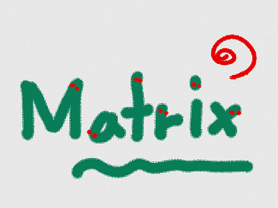
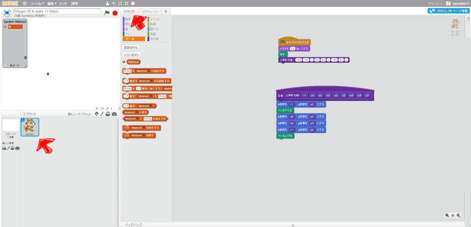
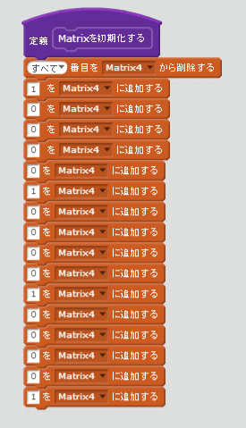
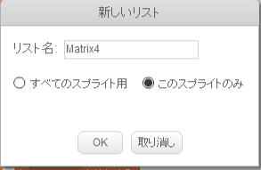
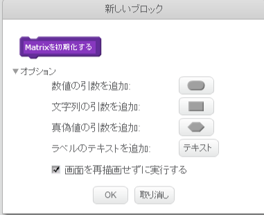
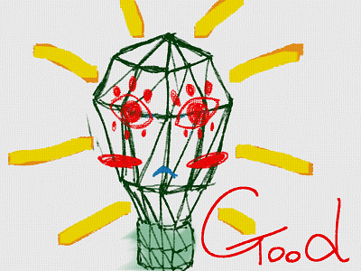

Matrixを定義(ていぎ)する

3Dでは、数学的(すうがくてき)な表現(ひょうげん)が多用(たよう)されます。そのひとつがMatrixです。日本語(にほんご)では行列(ぎょうれつ)といいます。2012年までは高校(こうこう)でならっていました。いまは、理系(りけに)の大学(だいがく)で習(なら)います。
しかし、3Dを扱(あつか)うならは必須(ひっす)の知識(ちしき)です。そして、理系(りけい)の大学生(だいがくせい)が習(なら)う数学(すうがく)ですが、使(つか)うだけなら簡単(かんだん)です。
トライしまみましょう。
(A) Matixとは数(かず)の集(あつ)まり
$$\left( \begin{array}{ccc} a{11} & a{12} & a{13} & a{14}\ a{21} & a{22} & a{23} & a{24}\ a{31} & a{32} & a{33} & a{34}\ a{41} & a{42} & a{43} & a{44}\ \end{array} \right)$$
Matrix にも色々(いろいろ)な種類(しゅるい)がありますが、3Dで扱(あつか)うのは、上記(じょうき)のような、横幅(よこはば)が4、縦幅(たてはば)が4のMatrixです。
※ $$a{11}$$から$$a{44}$$ には数字(すうじ)が入ります。
例(たと)えば、以下(いか)のように書(か)けます。
$$\left( \begin{array}{ccc} 1 & 0 & 0 & 0\ 0 & 1 & 0 & 0\ 0 & 0 & 1 & 0\ 0 & 0 & 0 & 1\ \end{array} \right)$$
あとで解説(かいせつ)しますが、この上(うえ)の行列(ぎょうれつ)は単位行列(たんいぎょうれつ)という、特殊(とくしゅ)なのものです。
今回(こんかい)のサンプルでは、Matrixを作成(さくせい)する時(とき)には、初期値(しょきち)として、単位行列(たんいぎょうれつ)を設定(せってい)するようにしています。
(B) これを、Scratchで表現(ひょうげん)してみましょう。
(1) Scripte画面(がめん)を表示(ひょうじ)する

(1-1) 左下(ひだりした)のSprite1をクリックする
(1-2) スクリプトタブをクリックする
(2) Scriptを追加(ついか)する

(2-注意)

※ このSpriteのみにチェックを入(い)れました。

※ 「画面を再描画せずに実行する」にチェックを入(い)れてください
(3) 確認(かくにん)する
今回(こんかい)の変更(へんこう)では、振(ふ)る舞(ま)いが変(か)わらないので、コードを目(め)で見(み)てチェックしましょう。
(3-1) 「Matrixを初期化する」定義(ていぎ)が、あること
(3-2) 「16回(かい)」値(あたい)を追加(ついか)していること
(3-3) 値(あたい)を追加(ついか)する前(まえ)に すべてのデーターを削除(さくじょ)していること
(3-4) {1,0,0,0} {0,1,0,0} {0,0,1,0} {0,0,0,1} と順(じゅん)に値(あたい)が追加(ついか)されていること
(4) Good !

よくできました。次(つぎ)のステップに進(すす)みましょう。